Studio: Armory
Armory mode is where the guns live. Every gun the game rolls is a frame (a pulse rifle, a shotgun...) made by a maker, built from one part in each slot, with a rarity and maybe an affix or two on top. Armory mode edits all of those, plus the trait rules (the numbers behind each trait) and impact (what a round's push does to whatever it hits).
Why tune guns here and not in the JSON? Because a gun is the sum of a lot of small numbers, and it's hard to know what "rate of fire 150, burst of 3, falloff from 22 m" feels like. Armory mode rolls a real gun from the data as it stands, shows its numbers in play next to what they were before your change, spins it in 3D, and puts it in your hands on the range. All without saving a thing!
How to open it
Click Armory along the top, or start Studio in it:
dotnet run --project src/LastFleet.Studio -- --mode armory
Add --select pulse_rifle (or any frame, maker or part id) to open with it picked.
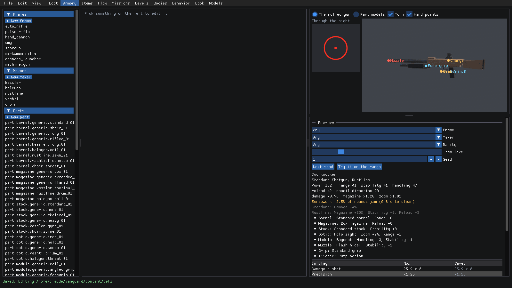
Here's the tour:
- On the left are the lists: Frames (
archetypes.json), Makers (manufacturers.json), Parts (parts.json), Affixes (affixes.json), and at the very bottom Trait rules (traits.json) and Impact (impact.json). - In the middle is the editor for what you've picked.
- Top right is the 3D panel. The rolled gun spins the previewed gun, put together from its part models the way the game does it. Part models browses every model in a frame's file instead.
- Bottom right is the Preview: a gun rolled from the current data. Pick its Frame, Maker and Rarity (or leave them on Any), its Item level and Seed. Under that is its card and its numbers in play.
New to Studio? getting-started.md covers editing, saving and undoing.
Tune a frame's damage over distance
So the pulse rifle falls off too early? Let's push its range out and see what that does.
Pick pulse_rifle under Frames. The Preview follows whatever frame you're editing, so it switches to a Pulse Rifle.
Above the fields is Damage over distance (falloff): damage (as a fraction of full) over meters. There's a line for a gun with range stat 0, one for range 100, and one for the rolled gun in the Preview. Damage is full out to where the line starts falling, drops in a straight line to its lowest, then stays flat.
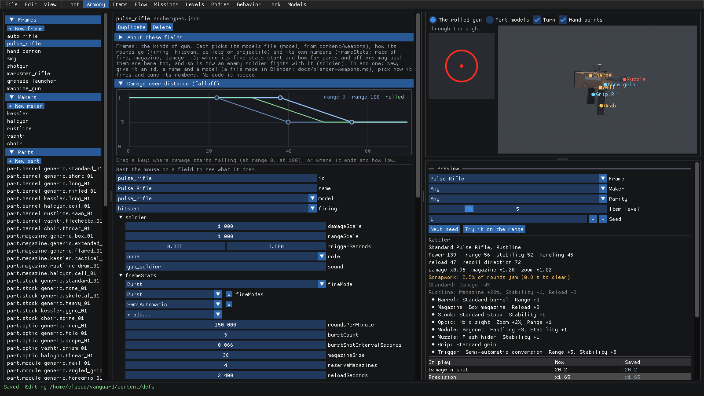
Drag the range 0 key (the dot where that line starts falling) to the right. That's
falloffStartfor a gun with range 0. The other keys work the same way: the range 100 key moves the start for range 100, and the end key moves sideways forfalloffSpanand up or down forfalloffMinimumMultiplier.Hover over the curve to read it. At 34 m, our pulse rifle now does 18.4 a hit at range 0, and its full 21 at range 100.
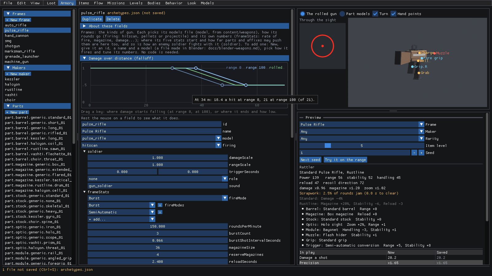
Now let's speed it up too. Drag
roundsPerMinute(underframeStats) from 150 to about 169.Scroll down the Preview to In play. Now is the rolled gun with your changes, Saved is the same roll with the data on disk. Anything that got better is green: rounds a minute 150 to 169, damage a second 50 to 57, and the falloff now 34 to 52 m instead of 31 to 49 m. Anything worse would be red.
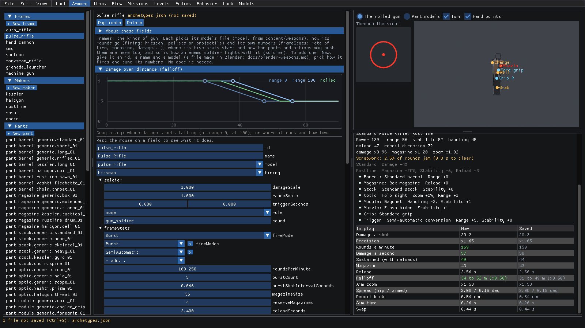
Like what you see? Ctrl+S. Or try it out first...
Try a gun on the range
Numbers are one thing, but how does it feel? Let's take that faster pulse rifle out for a spin.
In the Preview, click Try it on the range.
You're dropped onto the game's range with the previewed gun in your hands, edits and all, playing just like the game. The card top left has its numbers: our 169 rounds a minute and 57 damage a second are right there.
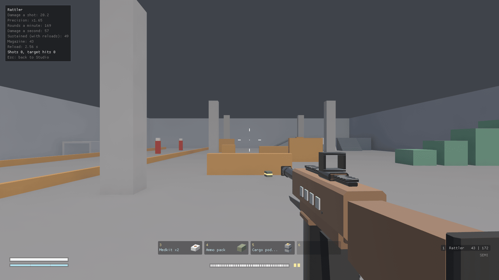
Shoot! The card counts your shots and how many hit the targets.
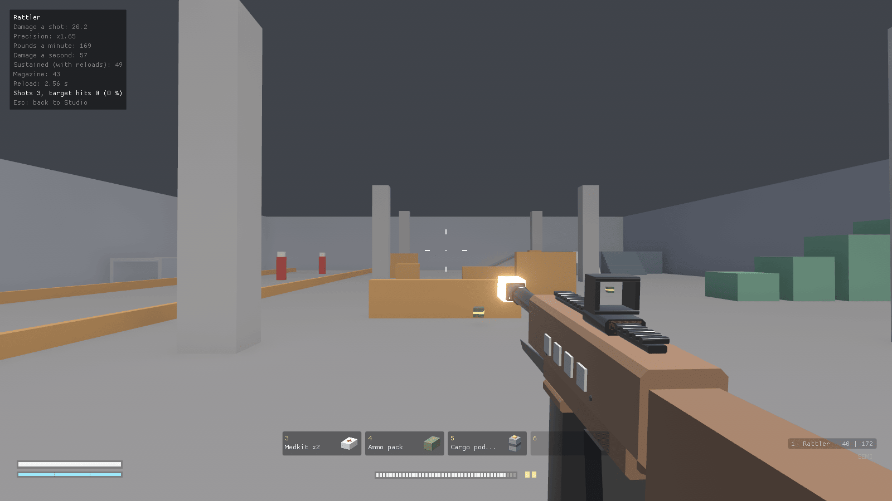
Press Esc to come back to Studio, right where you left off.
Not happy with how it handles? Tweak a number, hit Try it on the range again. Too easy! When you're done experimenting, Ctrl+Z takes the changes back (or Ctrl+S keeps them).
Check a gun in 3D
The 3D panel shows the gun exactly the way the game puts it together, so it's the place to catch a part sitting in the wrong spot or a sight that doesn't line up.
Pick marksman_rifle under Frames. The Preview and the 3D panel switch to a Marksman Rifle.
Untick Turn to stop the turntable, then drag the gun to turn it yourself. The mouse wheel brings it closer.
Hand points marks where hands go on it: the pistol grip (Grip.R), the Fore grip, the magazine's Grab and Well, the Charge handle, and the Muzzle. These come from the parts' markers in Blender (see weapons.md), so if a hand point is off, it's the model that needs fixing.
On the left, Through the sight shows what you'd see aimed: here the marksman rifle's scope reticle. A sight with a second zoom shows that one beside it.
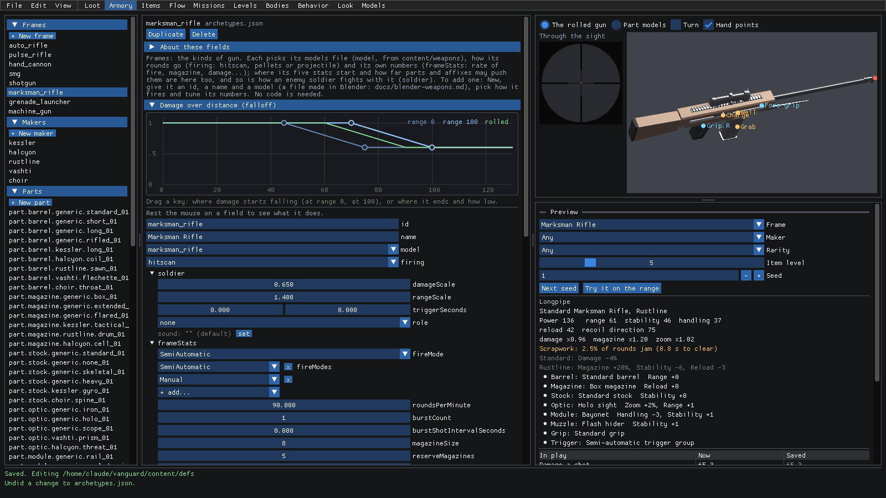
Now pick Part models at the top. This lists every model in the frame's file (here
marksman_rifle.gltf) for one slot. Pick Barrel in Slot, then click Barrel_5_Coil. It spins on its own, and the panel says which data parts use it (Named by: part.barrel.halcyon.coil_01) and what markers it has.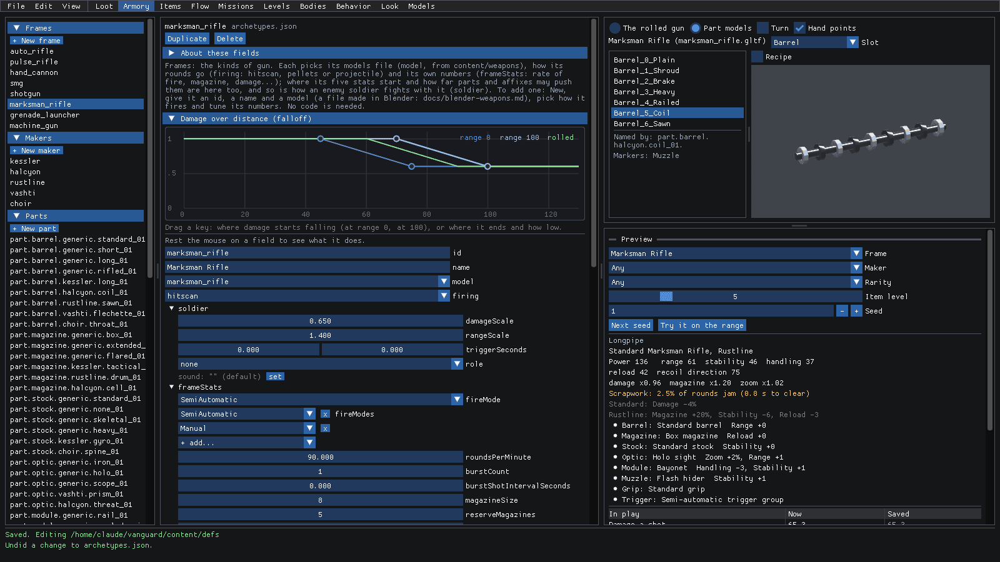
The models come straight from content/weapons. Export from Blender and Studio reloads the file right away, so you can
keep the 3D panel open while you work on a model. Recipe, next to the list, opens the part's recipe from
content/weapons/forge.json.
Pick the model a part shows as
Parts are the pieces each gun is built from, one per slot. Each one changes the gun's stats (its mods) and shows as a
model from its frame's file.
Pick part.barrel.halcyon.coil_01 under Parts. It's a barrel (
slot), only made by Halcyon (manufacturer), starts atmilitaryrarity, and itsmodelisCoil.Click the model button (Coil +). The picker opens below it, with every barrel model for each frame, each with its icon. Type in filter by name to narrow them down.
Rest the mouse on a model and it spins in 3D on the right, with its paint slots and markers in the tooltip. Click one to pick it. (the game's choice) at the top leaves it to the game.
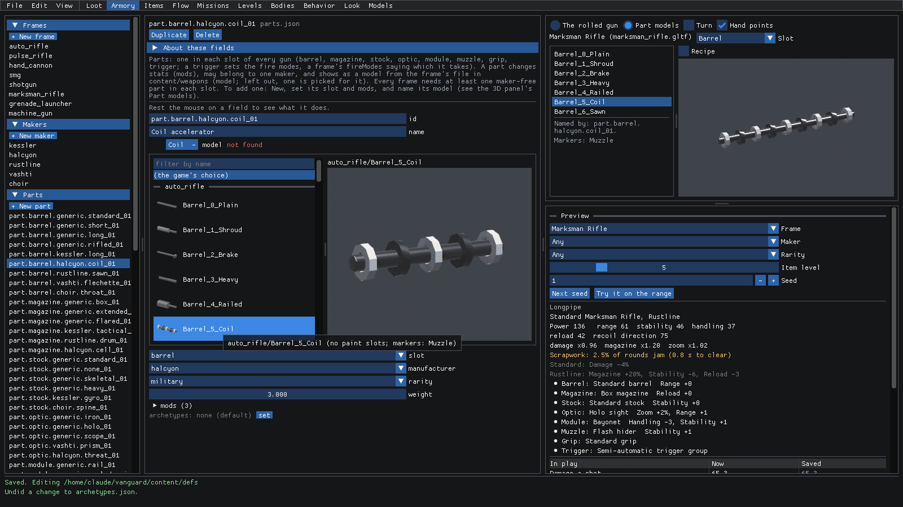
Click the model button again (now Coil -) to close the picker.
Heads up: right now Studio marks a part's short model name (like Coil, the end of Barrel_5_Coil) as not found
in red, even though the game finds it just fine. The Part models panel is the one to trust here: it shows the model
Named by the part.
Give a maker a new gun name
Makers are who builds the guns. Each has a paint color, a bias on every gun's stats, a signature trait, and the
names its guns go by.
Pick kessler under Makers. The Preview switches to Kessler Armory, and its card shows the maker's signature (Steady hand) and its bias (Kessler Armory: Stability +6, Recoil dir. +7).
Open models. There's a row for each frame Kessler builds: the frame on the right, and the names players see on the left. A frame with no row here is one this maker doesn't build.
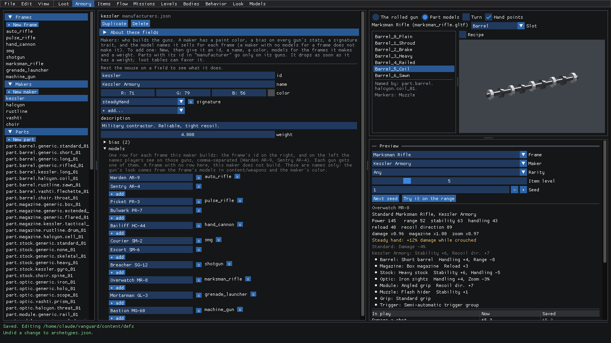
Under
marksman_rifle, click + add. A new empty name shows up. Click it and typeLongwatch MR-12.The Preview rolls again, and this seed now comes out as the Longwatch MR-12!
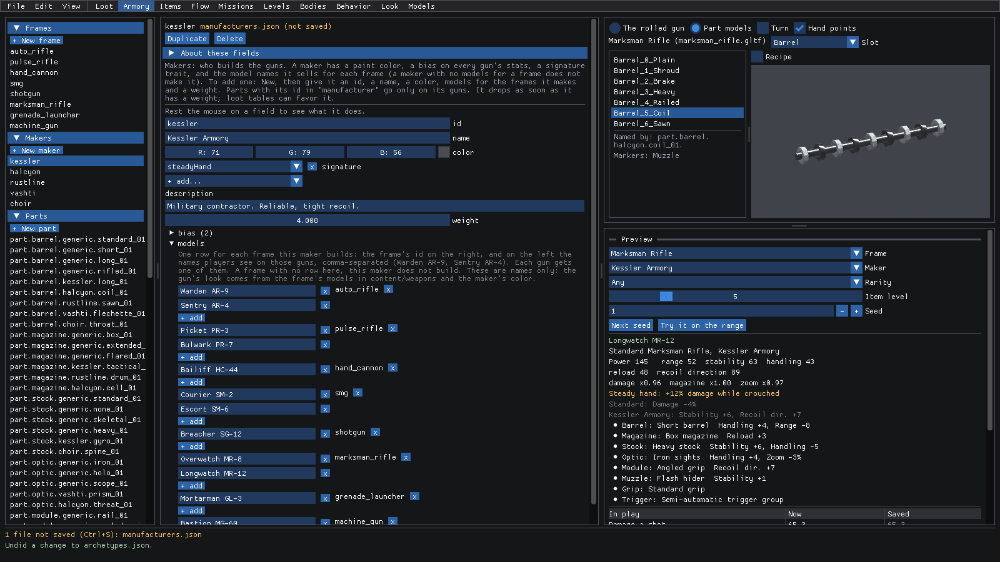
Ctrl+S to keep it, or Ctrl+Z to take it back.
These are only names. The gun's look comes from the frame's models and the maker's color.
Make a trait stronger
Kessler's signature is Steady hand: more damage while crouched. What a trait does is code, but how strong it is lives in the Trait rules.
With the Preview still on a Kessler gun, scroll down the left list and pick Trait rules. Every trait is here with its numbers:
steadyHand,restoration,scrapwork,hunger,tollingand the rest.Drag
steadyHand'scrouchedDamageup from 1.12 to about 1.27. The Preview's card follows: Steady hand: +27% damage while crouched.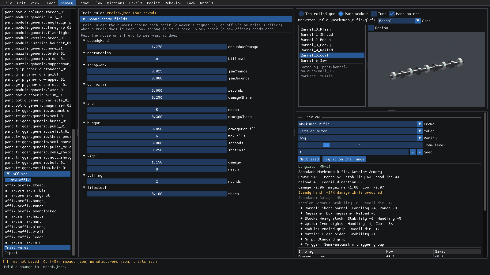
Affixes, just above, work the same way as parts: each has a kind (prefix or suffix), the rarity it starts at, its
mods, and any traits it brings.
Tune what a round's push does
What happens when a round hits someone? It pushes them. Hard enough and they slide off their feet, harder still and they're knocked down, and a killing round throws the body. Impact sets those thresholds for everyone.
Scroll to the bottom of the left list and pick Impact. Pushes are in meters a second. Each frame's own
impactandimpactRangesay how hard and how far its rounds push.Rest the mouse on
knockdownPush: at this push or above, the body is knocked down (no moving or firing, the downed pose).Want knockdowns rarer? Drag
knockdownPushup a little, from 6 to about 7. Keep it undermaxPush(9), or nothing could ever knock anyone down! The scales below it (playerScale,soldierScale,swarmScale) say how much each kind of body is pushed. Players aren't pushed at all (0).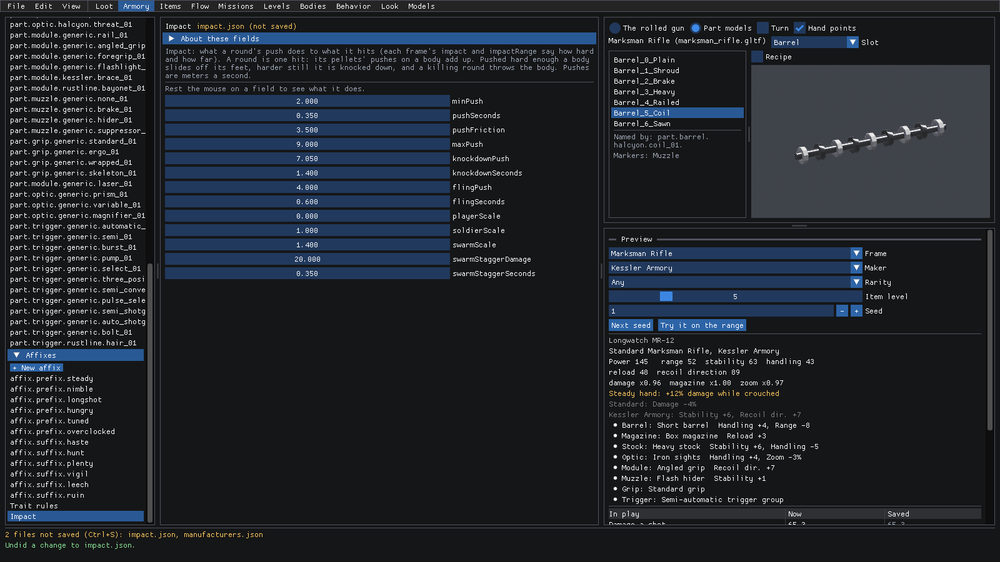
The status bar lists every file you've changed. Ctrl+S saves them all.
Impact doesn't show in the Preview, so this is one to try in the game: save, then start a mission and shoot someone.
Where to next
- The reference covers every field. Armory is described at the top, and the Preview, the falloff curve, the 3D panel, the model picker and the range under seeing a change.
- loot.md: the loot tables, rarities and relics that decide which of these guns drop.
- weapons.md: making the part models, and the markers the hand points come from.
- adding-content.md: what to set when you add a frame, maker, part or affix.